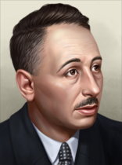
可释放国家/欧洲
原页面：Releasable countries/Europe
可释放国家主页面，请参见可释放国家。
For the releasable countries in the Soviet Union, see 可释放国家/苏联.
This is a list of all releasable countries located in Europe outside of the  苏联. These countries can be released at game start via various Custom Game Rules.
苏联. These countries can be released at game start via various Custom Game Rules.
List of releasable countries in Europe
| 国家 | Tag | 首都 | 意识形态 | 核心位于 | 备注 |
|---|---|---|---|---|---|
| WUR | Stuttgart | Cannot be released by | |||
| NAV | Bilbao | Cannot be released by | |||
| BAY | Minga (Munich) | Cannot be released by | |||
| BOS | Sarajevo | Requires Divide Bosnia or Protect Bosnia to be released by Shares a core with | |||
| BRI | Brest | ||||
| CAT | Barcelona | Cannot be released by | |||
| COR | Ajáccio | ||||
| CRO | Zagreb | Requires Shares a core with | |||
| CYP | Nicosia | Requires Is released as a | |||
| GLC | La Coruña | Cannot be released by | |||
| HES | Frankfurt | Shares its core with Cannot be released by | |||
| HRZ | Mostar | Requires Divide Bosnia to be released by Shares its core with | |||
| KSH | Toruń | Shares its cores with | |||
| KOS | Prishtina | Requires Dissolve the Banate of Serbia to be released by Shares its core with | |||
| LBV | Venice | Shares two cores with | |||
| MAC | Skopje | Requires Dissolve the Banate of Serbia to be released by | |||
| MLT | Valletta | Requires Is released as a | |||
| MEK | Rostock | Cannot be released by | |||
| MOL | Chișinău | Shares a core with | |||
| MNT | Podgorica | Requires Dissolve the Banate of Serbia to be released by | |||
| NIR | Belfast | 与 | |||
| OCC | Toulouse | ||||
| PAP | Rome | ||||
| PRE | Berlin | Has multiple claims in Shares cores with Cannot be released by | |||
| RHI | Essen | Shares its cores with Cannot be released by | |||
| SMI | Inari | Requires Shares a core with | |||
| SPM | Genoa | Has a claim in | |||
| SAX | Dresden | Cannot be released by | |||
| SHL | Hamburg | Shares its cores with Cannot be released by | |||
| SCO | Edinburgh | ||||
| SER | Belgrade | Cannot be released manually by Shares a core with | |||
| SIL | Wrocław (Breslau) | Shares its cores with | |||
| SLO | Bratislava | 只能在 1936 年的第一天由 Shares a core with | |||
| SLV | 卢布尔雅那 | Requires Shares a core with | |||
| THU | Erfurt | Cannot be released by | |||
| TRA | Brasov | Requires Shares a core with | |||
| TOS | Florence | ||||
| TTS | Napoli | ||||
| WLS | Cardiff | ||||
| HAN | 汉诺威 | Shares its cores with Cannot be released by |
巴登-符腾堡
巴登-符腾堡王国 开局时为中立主义，每 4 年举行一次选举。下一次选举在 1940 年 1 月。
开局时为中立主义，每 4 年举行一次选举。下一次选举在 1940 年 1 月。
| 政党 | 意识形态 | 支持率 | 党派领袖 | 国家名称 | 是否执政？ |
|---|---|---|---|---|---|
| 民主主义 | 15% | 通用 | Free State of Baden-Württemberg | No | |
| 共产主义 | 25% | 通用 | People's Republic of Baden-Württemberg | No | |
| 法西斯主义 | 20% | 通用 | Swabia | No | |
| 中立主义 | 40% | Philipp Albrecht of Württemberg | 巴登-符腾堡王国 | 是 |
| 意识形态 | 肖像 | 名称 | 党派 | 特质 | 效果 | 可用 |
|---|---|---|---|---|---|---|
Despotism |
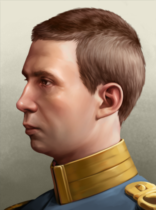 |
Philipp Albrecht of Württemberg | 中立主义 | – | – | 起始领袖 |
决议
 巴登-符腾堡 can form
巴登-符腾堡 can form  德国
德国
巴斯克地区
巴斯克地区 开局时为民主主义，每 4 年举行一次选举。下一次选举在 1940 年 1 月。
开局时为民主主义，每 4 年举行一次选举。下一次选举在 1940 年 1 月。
| 政党 | 意识形态 | 支持率 | 党派领袖 | 国家名称 | 是否执政？ |
|---|---|---|---|---|---|
| Eusko Abertzale Ekintza (EAE-ANV) | 93% | Luis Urrengoetxea | 巴斯克地区 | 是 | |
| Euskadiko Partidu Komunista (EPK-PCV) | 4% | Ramón Ormazábal Tife | Socialist Euzkal Herria | No | |
| Alderdi Nazional (AN) | 3% | 通用 | Baskonia | No | |
| Euzko Alderdi Jeltzalea (EAJ-PNV) | 0% | 通用 | Kingdom of Navarra | No |
With the "11th of November" Custom Game Rule, the Basque Country starts as the  Kingdom of Navarra. And starts with its own army, navy and airforce.
Kingdom of Navarra. And starts with its own army, navy and airforce.
| 意识形态 | 肖像 | 名称 | 党派 | 特质 | 效果 | 可用 |
|---|---|---|---|---|---|---|
自由主义 |

|
Luis Urrengoetxea | Eusko Abertzale Ekintza | – | – | 起始领袖 |
马克思主义 |

|
Ramón Ormazábal Tife | Euskadiko Partidu Komunista | – | – | 起始领袖 |
As a custom starting nation, Kingdom of Navarra has the 2nd weakest force by comparison of the existing Iberian nations in the 11th of November setting. Navarra has 1 Infantry Division and 1 Infantry Brigade. A small army with 2 units. And in addition, it inherits some of Spain's army templates below. Otherwise, as Basque Country it has no army whatsoever.
| 类型 | 序号 | |
|---|---|---|
| 步兵 | 2 | |
| 师总数 | 2 |
| 师 | 名称列表 | 支援连 | 战斗营 |
|---|---|---|---|
| 步兵师 | 8x Infantry | ||
| Brigada de Infantería | 4x Infantry | ||
| Brigada de Montaña | 4x Mountaineer Infantry | ||
| 骑兵师 | 12x Cavalry |
Bavaria
巴伐利亚王国 开局时为中立主义，每 4 年举行一次选举。下一次选举在 1940 年 1 月。
开局时为中立主义，每 4 年举行一次选举。下一次选举在 1940 年 1 月。
| 政党 | 意识形态 | 支持率 | 党派领袖 | 国家名称 | 是否执政？ |
|---|---|---|---|---|---|
| 民主主义 | 0% | 通用 | Bavarian Free State | No | |
| 共产主义 | 25% | 通用 | Bavarian Soviet Republic | No | |
| 法西斯主义 | 5% | 通用 | National Socialist State of Bavaria | No | |
| 中立主义 | 70% | Rupprecht von Wittelsbach | 巴伐利亚王国 | 是 |
| 意识形态 | 肖像 | 名称 | 党派 | 特质 | 效果 | 可用 |
|---|---|---|---|---|---|---|
Despotism |
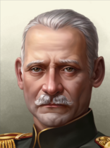 |
Rupprecht von Wittelsbach | 中立主义 | – | – | 起始领袖 |
| 肖像 | 名称 | 特质 | 要求 | |||||
|---|---|---|---|---|---|---|---|---|
| Ruprecht von Wittelsbach | 4 | 4 | 4 | 3 | 2 |
|
决议
 Bavaria can form
Bavaria can form  德国
德国
波斯尼亚-黑塞哥维那
 波斯尼亚-黑塞哥维那 以民主主义
波斯尼亚-黑塞哥维那 以民主主义 开局，每 4 年举行一次选举。下一次选举在 1940 年 1 月。
开局，每 4 年举行一次选举。下一次选举在 1940 年 1 月。
| 政党 | 意识形态 | 支持率 | 党派领袖 | 国家名称 | 是否执政？ |
|---|---|---|---|---|---|
| 民主主义 | 33% | 通用 | 波斯尼亚-黑塞哥维那 | 是 | |
| 共产主义 | 34% | 通用 | Socialist Republic of Bosnia | No | |
| 法西斯主义 | 0% | 通用 | Bosnia-Herzegovinan Defensive Cooperative | No | |
| 中立主义 | 33% | 通用 | 波斯尼亚 | No |
If  黑塞哥维那 is released,
黑塞哥维那 is released,  波斯尼亚-黑塞哥维那 will simply be called
波斯尼亚-黑塞哥维那 will simply be called  波斯尼亚何时
波斯尼亚何时 民主主义, and the Bosnian State何时
民主主义, and the Bosnian State何时 法西斯主义.
法西斯主义.
 Italian
Italian  法西斯主义 subject name: Protectorate of Bosnia, or Governorate of Sarajevo, if
法西斯主义 subject name: Protectorate of Bosnia, or Governorate of Sarajevo, if  黑塞哥维那 is released.
黑塞哥维那 is released.
 Yugoslavian subject name: 波斯尼亚省
Yugoslavian subject name: 波斯尼亚省
决议
 波斯尼亚-黑塞哥维那 can form
波斯尼亚-黑塞哥维那 can form  奥匈帝国
奥匈帝国
国策
- 主条目：Austro-Hungarian joint national focus tree branches
 波斯尼亚-黑塞哥维那 can get a new branch in addition to its 通用国策树, should
波斯尼亚-黑塞哥维那 can get a new branch in addition to its 通用国策树, should  奥地利 complete the focuses
奥地利 complete the focuses  多瑙河联邦 or
多瑙河联邦 or  Demand Hungarian Submission or if
Demand Hungarian Submission or if  匈牙利 completes the focuses
匈牙利 completes the focuses  The Lands of the Crown of Saint Stephen or
The Lands of the Crown of Saint Stephen or  多瑙河联邦 as vassal.
多瑙河联邦 as vassal.
布列塔尼
 布列塔尼 以中立主义
布列塔尼 以中立主义 开局，每 4 年举行一次选举。下一次选举在 1940 年 1 月。
开局，每 4 年举行一次选举。下一次选举在 1940 年 1 月。
| 政党 | 意识形态 | 支持率 | 党派领袖 | 国家名称 | 是否执政？ |
|---|---|---|---|---|---|
| Breton Federalist League (FLB) | 20% | Morvan Marchal | Breton Free Republic | No | |
| Breton Communist Party (PCB) | 10% | Yann-Morvan Gefflot | Socialist State of Brittany | No | |
| Breton National Party (NPB) | 40% | Olier Mordrel | National Republic of Brittany | No | |
| Breton Regionalist Union (URB) | 30% | Maurice Duhamel | 布列塔尼 | 是 |
| 意识形态 | 肖像 | 名称 | 党派 | 特质 | 效果 | 可用 |
|---|---|---|---|---|---|---|
社会主义 |

|
Morvan Marchal | Breton Federalist League | – | – | 起始领袖 |
斯大林主义 |
|
Yann-Morvan Gefflot | Breton Communist Party | – | – | 起始领袖 |
纳粹主义 |

|
Olier Mordrel | Breton National Party | – | – | 起始领袖 |
中间主义 |
|
Maurice Duhamel | Breton Regionalist Union | – | – | 起始领袖 |
Catalonia
The  加泰罗尼亚自由共和国 starts as
加泰罗尼亚自由共和国 starts as  民主主义 with elections every 4 years. Next election is in January 1940. In this starting mode it has no army, has a core in Catalonia and a claim in the Balearic Islands.
民主主义 with elections every 4 years. Next election is in January 1940. In this starting mode it has no army, has a core in Catalonia and a claim in the Balearic Islands.
| 政党 | 意识形态 | 支持率 | 党派领袖 | 国家名称 | 是否执政？ |
|---|---|---|---|---|---|
| Esquerra Republicana de Catalunya (ERC) | 50% | Lluís Companys i Jover | 加泰罗尼亚自由共和国 | 是 | |
| Partit Obrer d'Unificació Marxista (POUM) | 47% | Andreu Nin i Pérez | Communion of Catalans | No | |
| Nosaltres Sols! (NS) | 3% | Daniel Cardona i Civit | Catalan State | No | |
| Lliga Catalana (LC) | 0% | Francesc Cambó i Batlle | Catalonia | No |
With the "11th of November" Custom Game Rule, Catalonia starts as the  Crown of Aragon, with additional core states in
Crown of Aragon, with additional core states in  西班牙,
西班牙,  意大利, and
意大利, and  Malta. And starts with its own army, navy and airforce. Under this game rule the starting ruling party is instead
Malta. And starts with its own army, navy and airforce. Under this game rule the starting ruling party is instead  中立主义. At the start of the Spanish Civil war the Balearic Islands may disappear from its control.
中立主义. At the start of the Spanish Civil war the Balearic Islands may disappear from its control.
| 政党 | 意识形态 | 支持率 | 党派领袖 | 国家名称 | 是否执政？ |
|---|---|---|---|---|---|
| Esquerra Republicana de Catalunya (ERC) | 7.5% | Lluís Companys i Jover | Aragonese Republic | No | |
| Partit Obrer d'Unificació Marxista (POUM) | 7.05% | Andreu Nin i Pérez | People's Republic of Aragon | No | |
| Nosaltres Sols! (NS) | 0.45% | Daniel Cardona i Civit | State of Aragon | No | |
| Lliga Catalana (LC) | 85% | Francesc Cambó i Batlle | Crown of Aragon | 是 |
| 意识形态 | 肖像 | 名称 | 党派 | 特质 | 效果 | 可用 |
|---|---|---|---|---|---|---|
自由主义 |
Lluís Companys i Jover | Esquerra Republicana de Catalunya | – | – | 起始领袖 | |
马克思主义 |
|
Andreu Nin i Pérez | Partit Obrer d'Unificació Marxista | – | – | 起始领袖 |
法西斯主义 |
|
Daniel Cardona i Civit | Nosaltres Sols! | – | – | 起始领袖 |
中间主义 |
|
Francesc Cambó i Batlle | Lliga Catalana | – | – | 起始领袖 |
| 类型 | 序号 | |
|---|---|---|
| 步兵 | 4 | |
| 师总数 | 4 |
| 类型 | 序号 | |
|---|---|---|
| 驱逐舰 | 1 | |
| 战列舰 | 2 | |
| 潜艇 | 1 | |
| 舰船总数 | 4 |
| 类型 | 序号 | |
|---|---|---|
| 战斗机 | 12 | |
| 海军轰炸机 | 6 | |
| 飞机总数 | 18 |
- 陆军
Crown of Aragon has 3 infantry division and 1 infantry brigade that is undertrained (level 1 green, 50%).
| 师 | 名称列表 | 支援连 | 战斗营 |
|---|---|---|---|
| 步兵师 | 8x Infantry | ||
| Brigada de Infantería | 4x Infantry | ||
| Brigada de Montaña | 4x Mountaineer Infantry | ||
| 骑兵师 | 12x Cavalry |
- 海军
Crown of Aragon has a force of 1 Alsedo Class destroyer, 1 B Class Submarine and 2 Espana Class Battleships.
- 空军
Crown of Aragon has a force of 12 (NiD 62) Fighters and 6 Naval Bombers (Vickers Vildebeest) stationed in Islas Baleares. The Fighter squadron starts separately (1st Squad 8 fighters, 2nd Squad 4 Fighters) starting in Catalonia and Valencia
Corsica
科西嘉共和国 开局时为民主主义，每 4 年举行一次选举。下一次选举在 1940 年 1 月。
开局时为民主主义，每 4 年举行一次选举。下一次选举在 1940 年 1 月。
| 政党 | 意识形态 | 支持率 | 党派领袖 | 国家名称 | 是否执政？ |
|---|---|---|---|---|---|
| 民主主义 | 53% | 通用 | 科西嘉共和国 | 是 | |
| 共产主义 | 2% | 通用 | Revolutionary Corsica | No | |
| 法西斯主义 | 20% | 通用 | Fraternal Corsica | No | |
| 中立主义 | 25% | 通用 | Duchy of Corsica | No |
克罗地亚
- 主条目：克罗地亚独立国
克罗地亚独立国 以法西斯主义开局，不举行选举。
以法西斯主义开局，不举行选举。
| 政党 | 意识形态 | 支持率 | 党派领袖 | 国家名称 | 是否执政？ |
|---|---|---|---|---|---|
| Croatian Peasant Party (HSS) | 15% | Vladko Maček | Republic of Croatia | No | |
| League of Communists of Croatia (KPH) | 10% | 通用 | SR Croatia | No | |
| Croatian Revolutionary Movement (Ustaša) | 75% | Ante Pavelic | 克罗地亚独立国 | 是 | |
| 中立主义 | 0% | Vladko Maček | Kingdom of Croatia | No |
 Yugoslavian subject name: 克罗地亚省
Yugoslavian subject name: 克罗地亚省
决议
 克罗地亚 can form
克罗地亚 can form  奥匈帝国
奥匈帝国
国策
- 主条目：Austro-Hungarian joint national focus tree branches
 克罗地亚 can get a new branch in addition to its 通用国策树, should
克罗地亚 can get a new branch in addition to its 通用国策树, should  奥地利 complete the focuses
奥地利 complete the focuses  多瑙河联邦 or
多瑙河联邦 or  Demand Hungarian Submission or if
Demand Hungarian Submission or if  匈牙利 completes the focuses
匈牙利 completes the focuses  The Lands of the Crown of Saint Stephen or
The Lands of the Crown of Saint Stephen or  多瑙河联邦 as vassal.
多瑙河联邦 as vassal.
塞浦路斯
塞浦路斯共和国 开局时为民主主义，每 4 年举行一次选举。下一次选举在 1940 年 1 月。
开局时为民主主义，每 4 年举行一次选举。下一次选举在 1940 年 1 月。
| 政党 | 意识形态 | 支持率 | 党派领袖 | 国家名称 | 是否执政？ |
|---|---|---|---|---|---|
| 民主主义 | 50% | 通用 | 塞浦路斯共和国 | 是 | |
| 共产主义 | 15% | 通用 | Cypriot Democratic People's Republic | No | |
| 法西斯主义 | 8% | 通用 | Cypriot Empire | No | |
| 中立主义 | 27% | 通用 | 塞浦路斯 | No |
加利西亚
加利西亚共和国 开局时为民主主义，每 4 年举行一次选举。下一次选举在 1940 年 1 月。
开局时为民主主义，每 4 年举行一次选举。下一次选举在 1940 年 1 月。
| 政党 | 意识形态 | 支持率 | 党派领袖 | 国家名称 | 是否执政？ |
|---|---|---|---|---|---|
| Partido Galeguista (PG) | 93% | Alfonso Daniel Castelao | 加利西亚共和国 | 是 | |
| Comité Revoluzonareo Arredista (CRAG) | 4% | Fuco Gómez | Socialist Galiza | No | |
| Dereita Geleguista (DG) | 3% | Vicente Martínez Risco | State of Gallaecia | No | |
| Organización Republicana Galega Autónoma (ORGA) | 0% | Santiago Casares Quiroga | 加利西亚 | No |
With the "11th of November" Custom Game Rule, the Republic of Galiza starts as  加利西亚. And starts with its own army, navy and airforce.
加利西亚. And starts with its own army, navy and airforce.
| 意识形态 | 肖像 | 名称 | 党派 | 特质 | 效果 | 可用 |
|---|---|---|---|---|---|---|
自由主义 |

|
Alfonso Daniel Castelao | Partido Galeguista | – | – | 起始领袖 |
马克思主义 |
|
Fuco Gómez | Comité Revoluzonareo Arredista | – | – | 起始领袖 |
法西斯主义 |

|
Vicente Martínez Risco | Dereita Geleguista! | – | – | 起始领袖 |
中间主义 |
|
Santiago Casares Quiroga | Organización Republicana Galega Autónoma | – | – | 起始领袖 |
| 类型 | 序号 | |
|---|---|---|
| 步兵 | 1 | |
| 骑兵 | 1 | |
| 师总数 | 2 |
| 类型 | 序号 | |
|---|---|---|
| 驱逐舰 | 3 | |
| 舰船总数 | 3 |
| 类型 | 序号 | |
|---|---|---|
| 战斗机 | 1 | |
| 海军轰炸机 | 1 | |
| 飞机总数 | 2 |
- 陆军
Galicia has 1 infantry division and 1 Cavalry Division.
| 师 | 名称列表 | 支援连 | 战斗营 |
|---|---|---|---|
| 步兵师 | 8x Infantry | ||
| Brigada de Infantería | 4x Infantry | ||
| Brigada de Montaña | 4x Mountaineer Infantry | ||
| 骑兵师 | 12x Cavalry |
- 海军
Galicia has a force of 3 Alsedo Class destroyers.
- 空军
Galicia has a force of 1 (NiD 62) Fighters and 1 Naval Bombers (Vickers Vildebeest). The Fighter squadron starts separately (1st Squad 1 fighters, 2nd Squad 0 Fighters)
Hesse
黑森大公国 开局时为中立主义，每 4 年举行一次选举。下一次选举在 1940 年 1 月。
开局时为中立主义，每 4 年举行一次选举。下一次选举在 1940 年 1 月。
| 政党 | 意识形态 | 支持率 | 党派领袖 | 国家名称 | 是否执政？ |
|---|---|---|---|---|---|
| 民主主义 | 5% | 通用 | People's State of Hesse | No | |
| 共产主义 | 5% | 通用 | People's Republic of Hesse | No | |
| 法西斯主义 | 40% | 通用 | Groß-Hessen | No | |
| 中立主义 | 50% | Philipp, Landgrave of Hesse | 黑森大公国 | 是 |
| 意识形态 | 肖像 | 名称 | 党派 | 特质 | 效果 | 可用 |
|---|---|---|---|---|---|---|
Despotism |
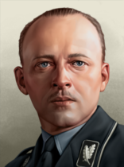 |
Philipp, Landgrave of Hesse | 中立主义 | – | – | 起始领袖 |
决议
 Hesse can form
Hesse can form  德国
德国
黑塞哥维那
 黑塞哥维那 以中立主义
黑塞哥维那 以中立主义 开局，每 4 年举行一次选举。下一次选举在 1940 年 1 月。
开局，每 4 年举行一次选举。下一次选举在 1940 年 1 月。
| 政党 | 意识形态 | 支持率 | 党派领袖 | 国家名称 | 是否执政？ |
|---|---|---|---|---|---|
| 民主主义 | 33% | 通用 | Republic of Herzegovina | 是 | |
| 共产主义 | 34% | 通用 | Socialist Republic of Herzegovina | No | |
| 法西斯主义 | 0% | 通用 | New Duchy of Saint Sava | No | |
| 中立主义 | 33% | 通用 | 黑塞哥维那 | No |
 Italian
Italian  法西斯主义 subject name: Governorate of Mostar
法西斯主义 subject name: Governorate of Mostar
 Yugoslavian subject name: 黑塞哥维那省
Yugoslavian subject name: 黑塞哥维那省
国策
- 主条目：Austro-Hungarian joint national focus tree branches
 黑塞哥维那 can get a new branch in addition to its 通用国策树, should
黑塞哥维那 can get a new branch in addition to its 通用国策树, should  奥地利 complete the focuses
奥地利 complete the focuses  多瑙河联邦 or
多瑙河联邦 or  Demand Hungarian Submission or if
Demand Hungarian Submission or if  匈牙利 completes the focuses
匈牙利 completes the focuses  The Lands of the Crown of Saint Stephen or
The Lands of the Crown of Saint Stephen or  多瑙河联邦 as vassal.
多瑙河联邦 as vassal.
卡舒比
 卡舒比 以民主主义
卡舒比 以民主主义 开局，每 4 年举行一次选举。下一次选举在 1940 年 1 月。
开局，每 4 年举行一次选举。下一次选举在 1940 年 1 月。
| 政党 | 意识形态 | 支持率 | 党派领袖 | 国家名称 | 是否执政？ |
|---|---|---|---|---|---|
| 民主主义 | 50% | Aleksander Majkowski | 卡舒比 | 是 | |
| 共产主义 | 35% | 通用 | Kashubian Commune | No | |
| 法西斯主义 | 5% | 通用 | Kashubian Free State | No | |
| 中立主义 | 10% | 通用 | Duchy of Pomeralia-Gdansk | No |
| 意识形态 | 肖像 | 名称 | 党派 | 特质 | 效果 | 可用 |
|---|---|---|---|---|---|---|
保守主义 |
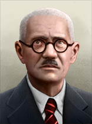 |
Aleksander Majkowski | 民主主义 | – | – | 起始领袖 |
科索沃
Republic of Kosovo 开局时为民主主义，每 4 年举行一次选举。下一次选举在 1940 年 1 月。
开局时为民主主义，每 4 年举行一次选举。下一次选举在 1940 年 1 月。
| 政党 | 意识形态 | 支持率 | 党派领袖 | 国家名称 | 是否执政？ |
|---|---|---|---|---|---|
| 民主主义 | 50% | 通用 | 是 | ||
| 共产主义 | 20% | 通用 | 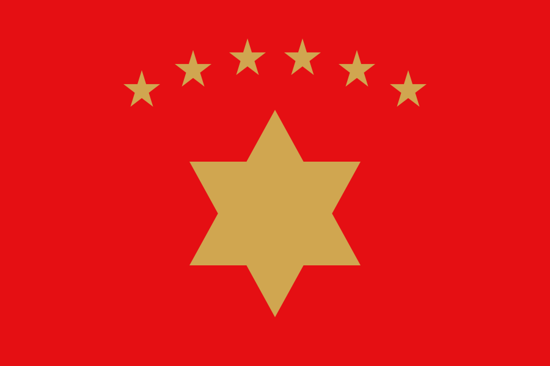 Kosovo Communist League |
No | |
| 法西斯主义 | 0% | 通用 | 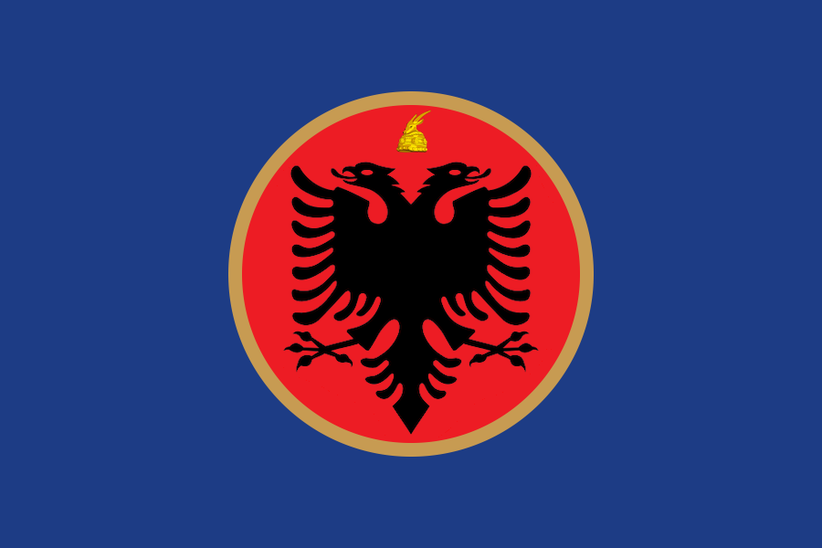 Dardania |
No | |
| 中立主义 | 30% | 通用 | 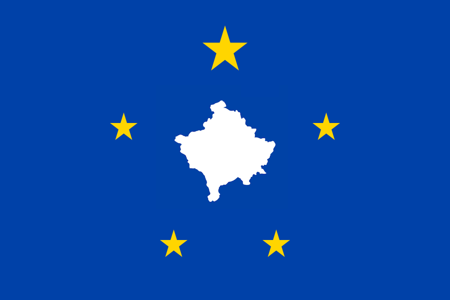 科索沃 |
No |
 Italian
Italian  法西斯主义 subject name: Governorate of Prishtina
法西斯主义 subject name: Governorate of Prishtina
 Yugoslavian subject name: 科索沃自治区
Yugoslavian subject name: 科索沃自治区
伦巴底-威尼西亚
The  伦巴底-威尼西亚王国 starts as
伦巴底-威尼西亚王国 starts as  中立主义 with elections every 5 years. Next election is in March 1939.
中立主义 with elections every 5 years. Next election is in March 1939.
| 政党 | 意识形态 | 支持率 | 党派领袖 | 国家名称 | 是否执政？ |
|---|---|---|---|---|---|
| Popular Party of Venice | 15% | 通用 | United Republics of Lombardy and Venetia | No | |
| Transpadanian People's Party | 15% | 通用 | People's United Provinces of Transpadania | No | |
| Cisalpine Unitary Party | 10% | 通用 | Most Serene Republic of Cisalpina | No | |
| Royalists | 60% | 罗伯特·冯·哈布斯堡 | 伦巴底-威尼西亚王国 | 是 |
As a  受监管国, it is known as the [宗主国的] Occupation Zone of Lombardy and Venice.
受监管国, it is known as the [宗主国的] Occupation Zone of Lombardy and Venice.
| 意识形态 | Portrait* | 名称 | 党派 | 特质 | 效果 | 可用 |
|---|---|---|---|---|---|---|
Despotism |
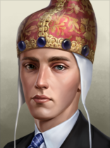 |
罗伯特·冯·哈布斯堡 | Royalists | Archduke of Austria-Este |
|
起始领袖 |
* Unique portrait requires  诸神黄昏.
诸神黄昏.
决议
 伦巴底-威尼西亚 can form
伦巴底-威尼西亚 can form  奥匈帝国
奥匈帝国
国策
- 主条目：Austro-Hungarian joint national focus tree branches
 伦巴底-威尼西亚 can get a new branch in addition to its 通用国策树, should
伦巴底-威尼西亚 can get a new branch in addition to its 通用国策树, should  奥地利 complete the focuses
奥地利 complete the focuses  多瑙河联邦 or
多瑙河联邦 or  Demand Hungarian Submission or if
Demand Hungarian Submission or if  匈牙利 completes the focuses
匈牙利 completes the focuses  The Lands of the Crown of Saint Stephen or
The Lands of the Crown of Saint Stephen or  多瑙河联邦 as vassal.
多瑙河联邦 as vassal.
马其顿
马其顿共和国 开局时为民主主义，每 4 年举行一次选举。下一次选举在 1940 年 1 月。
开局时为民主主义，每 4 年举行一次选举。下一次选举在 1940 年 1 月。
| 政党 | 意识形态 | 支持率 | 党派领袖 | 国家名称 | 是否执政？ |
|---|---|---|---|---|---|
| 民主主义 | 33% | 通用 | 是 | ||
| 共产主义 | 34% | 通用 | Macedonian People's Republic | No | |
| 法西斯主义 | 0% | 通用 | Greater Macedonia | No | |
| 中立主义 | 33% | 通用 | No |
 Italian
Italian  法西斯主义 subject name: Protectorate of Macedonia
法西斯主义 subject name: Protectorate of Macedonia
 Yugoslavian subject name: 瓦尔达尔省
Yugoslavian subject name: 瓦尔达尔省
Malta
 Malta 以民主主义
Malta 以民主主义 开局，每 4 年举行一次选举。下一次选举在 1940 年 1 月。
开局，每 4 年举行一次选举。下一次选举在 1940 年 1 月。
| 政党 | 意识形态 | 支持率 | 党派领袖 | 国家名称 | 是否执政？ |
|---|---|---|---|---|---|
| 民主主义 | 50% | 通用 | Malta | 是 | |
| 共产主义 | 15% | 通用 | Malta Commune | No | |
| 法西斯主义 | 8% | 通用 | Tenth Crusade | No | |
| 中立主义 | 27% | 通用 | Sovereign Military Order of Malta | No |
梅克伦堡
梅克伦堡大公国 开局时为中立主义，每 4 年举行一次选举。下一次选举在 1940 年 1 月。
开局时为中立主义，每 4 年举行一次选举。下一次选举在 1940 年 1 月。
| 政党 | 意识形态 | 支持率 | 党派领袖 | 国家名称 | 是否执政？ |
|---|---|---|---|---|---|
| 民主主义 | 3% | 通用 | Free State of Mecklenburg | No | |
| 共产主义 | 7% | 通用 | People's State of Mecklenburg | No | |
| 法西斯主义 | 40% | 通用 | Groß-Mecklenburg | No | |
| 中立主义 | 50% | Christian Louis of Mecklenburg | 梅克伦堡大公国 | 是 |
| 意识形态 | 肖像 | 名称 | 党派 | 特质 | 效果 | 可用 |
|---|---|---|---|---|---|---|
Despotism |
Christian Louis of Mecklenburg | 中立主义 | – | – | 起始领袖 |
决议
 梅克伦堡 can form
梅克伦堡 can form  德国
德国
摩尔多瓦
 摩尔多瓦 以民主主义
摩尔多瓦 以民主主义 开局，每 4 年举行一次选举。下一次选举在 1940 年 1 月。
开局，每 4 年举行一次选举。下一次选举在 1940 年 1 月。
| 政党 | 意识形态 | 支持率 | 党派领袖 | 国家名称 | 是否执政？ |
|---|---|---|---|---|---|
| 民主主义 | 55% | 通用 | 摩尔多瓦 | 是 | |
| 共产主义 | 30% | 通用 | Moldavian Socialist Republic | No | |
| 法西斯主义 | 1% | 通用 | 比萨拉比亚 | No | |
| 中立主义 | 14% | 通用 | Moldavia | No |
黑山
黑山共和国 开局时为民主主义，每 4 年举行一次选举。下一次选举在 1940 年 1 月。
开局时为民主主义，每 4 年举行一次选举。下一次选举在 1940 年 1 月。
| 政党 | 意识形态 | 支持率 | 党派领袖 | 国家名称 | 是否执政？ |
|---|---|---|---|---|---|
| Democracy League | 33% | 通用 | 黑山共和国 | 是 | |
| Communist Party of Montenegro | 34% | Blažo Jovanović | Socialist Republic of Montenegro | No | |
| Greens | 0% | Blažo Đukanović | Independent Montenegro | No | |
| Federalist Party | 33% | Krsto Popović | 黑山 | No |
 Italian
Italian  法西斯主义 subject name: Governorate of Montenegro
法西斯主义 subject name: Governorate of Montenegro
 Yugoslavian subject name: 泽塔省
Yugoslavian subject name: 泽塔省
| 意识形态 | 肖像 | 名称 | 党派 | 特质 | 效果 | 可用 |
|---|---|---|---|---|---|---|
列宁主义 |

|
Blažo Jovanović | Communist Party of Montenegro | – | – | 起始领袖 |
法西斯主义 |
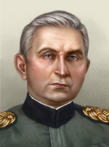 |
Blažo Đukanović | Greens | Head of the National Committee | Starting leader; Can come to power via | |
寡头 |

|
Krsto Popović | Federalist Party | Head of the National Committee | Starting leader; Can come to power via |
| 肖像 | 名称 | 特质 | 要求 | |||||
|---|---|---|---|---|---|---|---|---|
| Blažo Đukanović | 1 | 1 | 1 | 1 | 1 | – |
| |
|
|
Blažo Jovanović | 2 | 2 | 1 | 3 | 3 |
| |
|
|
Krsto Popović | 2 | 3 | 2 | 2 | 2 |
|
国策
- 主条目：Austro-Hungarian joint national focus tree branches
 黑山 can get a new branch in addition to its 通用国策树, should
黑山 can get a new branch in addition to its 通用国策树, should  奥地利 complete the focuses
奥地利 complete the focuses  多瑙河联邦 or
多瑙河联邦 or  Demand Hungarian Submission or if
Demand Hungarian Submission or if  匈牙利 completes the focuses
匈牙利 completes the focuses  The Lands of the Crown of Saint Stephen or
The Lands of the Crown of Saint Stephen or  多瑙河联邦 as vassal.
多瑙河联邦 as vassal.
北爱尔兰
 北爱尔兰 starts as
北爱尔兰 starts as  民主主义 with elections every 4 years. Next election is in January 1937. In the 1939 start, the next election is in June 1942.
民主主义 with elections every 4 years. Next election is in January 1937. In the 1939 start, the next election is in June 1942.
| 政党 | 意识形态 | 支持率 | 党派领袖 | 国家名称 | 是否执政？ |
|---|---|---|---|---|---|
| 民主主义 | 98% | 通用 | 北爱尔兰 | 是 | |
| 共产主义 | 1% | 通用 | Commune in the North of Ireland | No | |
| 法西斯主义 | 1% | 通用 | Ulster Nation | No | |
| 中立主义 | 0% | 通用 | Ulster | No |
奥克西塔尼亚
 奥克西塔尼亚 以民主主义
奥克西塔尼亚 以民主主义 开局，每 4 年举行一次选举。下一次选举在 1940 年 1 月。
开局，每 4 年举行一次选举。下一次选举在 1940 年 1 月。
| 政党 | 意识形态 | 支持率 | 党派领袖 | 国家名称 | 是否执政？ |
|---|---|---|---|---|---|
| 民主主义 | 50% | 通用 | 奥克西塔尼亚 | 是 | |
| 共产主义 | 15% | 通用 | Worker's Commune of Occitania | No | |
| 法西斯主义 | 15% | 通用 | Imperialist Occitania | No | |
| 中立主义 | 20% | 通用 | Kingdom of Aquitaine | No |
As a  法国 subject, it is known as the 南法自治区.
法国 subject, it is known as the 南法自治区.
As a  英国 subject, it is known as the 安茹阿基坦王国.
英国 subject, it is known as the 安茹阿基坦王国.
As the subject of any other country, it is known as [宗主国的]奥克西塔尼亚.
教宗国
The  教宗国 starts as
教宗国 starts as  中立主义 with elections every 5 years. Next election is in March 1939.
中立主义 with elections every 5 years. Next election is in March 1939.
| 政党 | 意识形态 | 支持率 | 党派领袖 | 国家名称 | 是否执政？ |
|---|---|---|---|---|---|
| Roman Republican Party | 10% | 通用 | Roman Republic | No | |
| Roman People's Party | 0% | 通用 | Roman People's Republic | No | |
| Crusader Party | 10% | 通用 | Kingdom of God | No | |
| 教宗支持者 | 80% | 通用 | 教宗国 | 是 |
As a  受监管国, it is known as the [宗主国的] Occupation Zone of Rome.
受监管国, it is known as the [宗主国的] Occupation Zone of Rome.
| 意识形态 | 肖像 | 名称 | 党派 | 特质 | 效果 | 可用 |
|---|---|---|---|---|---|---|
Oligarchy |

|
教宗庇护十二世 | 教宗支持者 | Supreme Pontiff Grand Master of the Equestrian Order of the Holy Sepulcher of Jerusalem |
|
If the "Reverse the Risorgimento" Custom Game Rule is enabled |
Prussia
普鲁士王国 开局时为中立主义，每 4 年举行一次选举。下一次选举在 1940 年 1 月。
开局时为中立主义，每 4 年举行一次选举。下一次选举在 1940 年 1 月。
| 政党 | 意识形态 | 支持率 | 党派领袖 | 国家名称 | 是否执政？ |
|---|---|---|---|---|---|
| 民主主义 | 10% | 通用 | Free State of Prussia | No | |
| 共产主义 | 10% | 通用 | Democratic Republic of Prussia | No | |
| 法西斯主义 | 5% | 通用 | Prussian Reich | No | |
| 中立主义 | 75% | 埃特尔·弗里德里希亲王 | 普鲁士王国 | 是 |
| 意识形态 | 肖像 | 名称 | 党派 | 特质 | 效果 | 可用 |
|---|---|---|---|---|---|---|
Despotism |
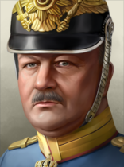 |
埃特尔·弗里德里希亲王 | 中立主义 | 士兵国王 |
|
起始领袖 |
| 肖像 | 名称 | 特质 | 要求 | |||||
|---|---|---|---|---|---|---|---|---|
| 埃特尔·弗里德里希亲王 | 2 | 2 | 1 | 2 | 2 |
|
决议
 Prussia can form
Prussia can form  德国
德国
莱茵共和国
莱茵共和国 开局时为民主主义，每 4 年举行一次选举。下一次选举在 1940 年 1 月。
开局时为民主主义，每 4 年举行一次选举。下一次选举在 1940 年 1 月。
| 政党 | 意识形态 | 支持率 | 党派领袖 | 国家名称 | 是否执政？ |
|---|---|---|---|---|---|
| 民主主义 | 60% | Josef Friedrich Matthes | 莱茵共和国 | 是 | |
| 共产主义 | 20% | 通用 | People's Independent Communes of the Rhine | No | |
| 法西斯主义 | 10% | 通用 | Rhenish Reich | No | |
| 中立主义 | 10% | 通用 | Rheinland-Pfalz | No |
| 意识形态 | 肖像 | 名称 | 党派 | 特质 | 效果 | 可用 |
|---|---|---|---|---|---|---|
社会主义 |
Josef Friedrich Matthes | 民主主义 | – | – | 起始领袖 |
决议
The  莱茵共和国 can form
莱茵共和国 can form  德国
德国
萨普米
 萨普米 以中立主义
萨普米 以中立主义 开局，每 4 年举行一次选举。下一次选举在 1940 年 1 月。
开局，每 4 年举行一次选举。下一次选举在 1940 年 1 月。
| 政党 | 意识形态 | 支持率 | 党派领袖 | 国家名称 | 是否执政？ |
|---|---|---|---|---|---|
| Sámerádet | 10% | The Sámi Conference | Republic of Sápmi | No | |
| Sámi People's Committee (SPC) | 10% | Sámi People's Council | People's Republic of Sápmi | No | |
| Sámi Regional Unity Party (SRUP) | 2% | Sápmi Regional Council | Greater Sámi Realm | No | |
| Sámiráđđi | 78% | The Saami Council | 萨普米 | 是 |
| 意识形态 | 肖像 | 名称 | 党派 | 特质 | 效果 | 可用 |
|---|---|---|---|---|---|---|
自由主义 |
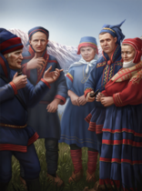 |
The Sámi Conference | Sámeráde | – | – | 起始领袖 |
马克思主义 |
Sámi People's Council | Sámi People's Committee | – | – | 起始领袖 | |
法西斯主义 |
Sápmi Regional Council | Sámi Regional Unity Party | – | – | 起始领袖 | |
中间主义 |
The Saami Council | Sámiráđđi | – | – | 起始领袖 |
决议
 萨普米 can form the
萨普米 can form the  北欧联盟
北欧联盟
策略与指南
Sapmi united by the fire achievement
Although unsurprisingly, Sapmi finds itself split between 4 countries, with an exception of Soviet Union, each which can release the country manually. Although released, it faces several difficulties starting internally with a small population to fend against their neighbor that has their own cores, depending which country releases it. Mainly Sweden and Soviet Union that can pose as a serious threat if faced against them.
The best choice scenario would be to start off as Sweden. It has more firepower in comparison to its Scandinavian nation neighbors. Take the necessary focuses to declare war on Norway, Finland and the Soviet Union either in order or selecting from the weakest to the strongest. Go for Denmark and Iceland should you need to annex them and form either the Nordic League or Kalmar Union for extra cores. Take their cores or annex them, and as you do so, release and play as Sapmi.
Finland is yet another challenge, arguably the second strongest nation in Scandinavia, that starts with an army buff. With a bit of focus clearance, go for Norway and Sweden. Take their Sapmi cores or fully annex them. If feeling lucky for extra cores to maintain order in Scandinavia, declare war on Iceland and Denmark next to form the Nordic League. Wait until the Soviets declare war on you next, and join the closest faction(Axis) as defeating the Soviets alone is a challenge of its own. Assist the Axis members for a quick invasion on the Soviet soil, and hope for the best to get the last piece in the peace conference, should the Soviets capitulate entirely.
Otherwise, you can release them as Sweden, and start it from there. Although it may appear less cored in comparison released by Norway, it has more population in comparison. As released Sapmi, flip fascist (or communist) to make haste to justify on your neighbors Norway and Finland. Then join the Axis for the campaign against the Soviets.
成就

火边的萨米团结（Sapmi united by the fire）
作为萨米人，拥有并控制每一个萨米核心。
Sardinia-Piedmont
 Sardinia-Piedmont starts as
Sardinia-Piedmont starts as  中立主义 with elections every 5 years. Next election is in March 1939.
中立主义 with elections every 5 years. Next election is in March 1939.
| 政党 | 意识形态 | 支持率 | 党派领袖 | 国家名称 | 是否执政？ |
|---|---|---|---|---|---|
| Savoyard Democratic Party | 10% | 通用 | United States of Savoy and Sardinia | No | |
| Cisalpine People's Party | 20% | 通用 | Cisalpine People's Federation | No | |
| Savoyard Restorationists | 10% | 通用 | Grand Duchy of Savoy | No | |
| Piedmontese Monarchists | 60% | 通用 | Sardinia-Piedmont | 是 |
As a  受监管国, it is known as the [宗主国的] Occupation Zone of Sardinia and Piedmont.
受监管国, it is known as the [宗主国的] Occupation Zone of Sardinia and Piedmont.
| 意识形态 | 肖像 | 名称 | 党派 | 特质 | 效果 | 可用 |
|---|---|---|---|---|---|---|
Despotism |

|
维托里奥·埃马努埃莱三世 | Piedmontese Monarchists | 士兵国王 |
|
If the "Reverse the Risorgimento" Custom Game Rule is enabled |
Saxony
萨克森王国 开局时为中立主义，每 4 年举行一次选举。下一次选举在 1940 年 1 月。
开局时为中立主义，每 4 年举行一次选举。下一次选举在 1940 年 1 月。
| 政党 | 意识形态 | 支持率 | 党派领袖 | 国家名称 | 是否执政？ |
|---|---|---|---|---|---|
| 民主主义 | 30% | 通用 | Free State of Saxony | No | |
| 共产主义 | 15% | 通用 | Democratic Republic of Saxony | No | |
| 法西斯主义 | 5% | 通用 | Saxon Empire | No | |
| 中立主义 | 50% | Georg of Saxony | 萨克森王国 | 是 |
| 意识形态 | 肖像 | 名称 | 党派 | 特质 | 效果 | 可用 |
|---|---|---|---|---|---|---|
Despotism |
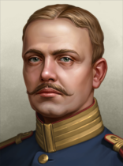 |
Georg of Saxony | 中立主义 | – | – | 起始领袖 |
决议
 Saxony can form
Saxony can form  德国
德国
石勒苏益格-荷尔斯泰因
 石勒苏益格-荷尔斯泰因 以民主主义
石勒苏益格-荷尔斯泰因 以民主主义 开局，每 4 年举行一次选举。下一次选举在 1940 年 1 月。
开局，每 4 年举行一次选举。下一次选举在 1940 年 1 月。
| 政党 | 意识形态 | 支持率 | 党派领袖 | 国家名称 | 是否执政？ |
|---|---|---|---|---|---|
| 民主主义 | 60% | Hermann Lüdemann | 石勒苏益格-荷尔斯泰因 | 是 | |
| 共产主义 | 5% | 通用 | Free People's Republic of Schleswig-Holstein | No | |
| 法西斯主义 | 5% | 通用 | Schleswig-Holsteinish Reich | No | |
| 中立主义 | 30% | 通用 | 石勒苏益格-荷尔斯泰因公国 | No |
| 意识形态 | 肖像 | 名称 | 党派 | 特质 | 效果 | 可用 |
|---|---|---|---|---|---|---|
社会主义 |
Hermann Lüdemann | 民主主义 | – | – | 起始领袖 |
决议
 石勒苏益格-荷尔斯泰因 can form
石勒苏益格-荷尔斯泰因 can form  德国
德国
苏格兰
 苏格兰 以民主主义
苏格兰 以民主主义 开局，每 4 年举行一次选举。下一次选举在 1940 年 1 月。
开局，每 4 年举行一次选举。下一次选举在 1940 年 1 月。
| 政党 | 意识形态 | 支持率 | 党派领袖 | 国家名称 | 是否执政？ |
|---|---|---|---|---|---|
| 民主主义 | 93% | 通用 | 苏格兰 | 是 | |
| 共产主义 | 4% | 通用 | Commonwealth of Alba | No | |
| 法西斯主义 | 3% | 通用 | Caledonia | No | |
| 中立主义 | 0% | 通用 | Kingdom of Scotland | No |
塞尔维亚
 塞尔维亚 starts as
塞尔维亚 starts as  中立主义 with elections every 3 years. Next election is in January 1939.
中立主义 with elections every 3 years. Next election is in January 1939.
| 政党 | 意识形态 | 支持率 | 党派领袖 | 国家名称 | 是否执政？ |
|---|---|---|---|---|---|
| Mihailovic Chetniks | 20% | Draza Mihailovic | 塞尔维亚 | No | |
| 共产党人联盟 | 20% | Zivorad Jovanovic | Socialist Republic of Serbia | No | |
| Government of National Salvation | 30% | Milan Nedic | 塞尔维亚帝国 | No | |
| Royalists | 30% | Peter Karadordevic | 塞尔维亚 | 是 |
 Italian
Italian  法西斯主义 subject name: Protectorate of Serbia
法西斯主义 subject name: Protectorate of Serbia
 南斯拉夫 can get the cosmetic tag
南斯拉夫 can get the cosmetic tag  塞尔维亚 when it has released all other constituent countries following the
塞尔维亚 when it has released all other constituent countries following the  Limited Self-Government branch of its 国策树. This does not mean that Yugoslavia becomes this tag of Serbia (SER), only that it uses Serbian country names and flags. It inherits all of Yugoslavia's army, navy, air force, commanders and upcoming events from other nations with the "Yugoslavia Fragmented" custom setting.
Limited Self-Government branch of its 国策树. This does not mean that Yugoslavia becomes this tag of Serbia (SER), only that it uses Serbian country names and flags. It inherits all of Yugoslavia's army, navy, air force, commanders and upcoming events from other nations with the "Yugoslavia Fragmented" custom setting.
| 意识形态 | 肖像 | 名称 | 党派 | 特质 | 效果 | 可用 |
|---|---|---|---|---|---|---|
保守主义 |
|
Draza Mihailovic | Mihailovic Chetniks | – | – | 起始领袖 |
列宁主义 |

|
Zivorad Jovanovic | 共产党人联盟 | – | – | 起始领袖 |
法西斯主义 |

|
Milan Nedic | National Salvation | – | – | 起始领袖 |
Despotism |
|
Peter Karadordevic | Royalists | – | – | 起始领袖 |
国家精神
 塞尔维亚 开局拥有以下国家精神：
塞尔维亚 开局拥有以下国家精神：
西里西亚
 西里西亚 以民主主义
西里西亚 以民主主义 开局，每 4 年举行一次选举。下一次选举在 1940 年 1 月。
开局，每 4 年举行一次选举。下一次选举在 1940 年 1 月。
| 政党 | 意识形态 | 支持率 | 党派领袖 | 国家名称 | 是否执政？ |
|---|---|---|---|---|---|
| Silesian People's Party (SLP) | 50% | Józef Kożdoń | 西里西亚 | 是 | |
| Silesian Socialist Party (ŚPS) | 35% | 通用 | Silesian People's Republic | No | |
| Union of Upper Silesians | 5% | 通用 | Silesian State | No | |
| the House of Hochberg | 10% | Alexander Hochberg | Duchy of Silesia | No |
| 意识形态 | 肖像 | 名称 | 党派 | 特质 | 效果 | 可用 |
|---|---|---|---|---|---|---|
社会主义 |
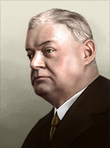 |
Józef Kożdoń | 民主主义 | – | – | 起始领袖 |
Despotism |
Alexander Hochberg | the House of Hochberg | Fürst von Pless, Graf von Hochberg, Freiherr zu Fürstenstein |
|
起始领袖 |
决议
 西里西亚 can form
西里西亚 can form  奥匈帝国
奥匈帝国
国策
- 主条目：Austro-Hungarian joint national focus tree branches
 西里西亚 can get a new branch in addition to its 通用国策树, should
西里西亚 can get a new branch in addition to its 通用国策树, should  奥地利 complete the focuses
奥地利 complete the focuses  多瑙河联邦 or
多瑙河联邦 or  Demand Hungarian Submission or if
Demand Hungarian Submission or if  匈牙利 completes the focuses
匈牙利 completes the focuses  The Lands of the Crown of Saint Stephen or
The Lands of the Crown of Saint Stephen or  多瑙河联邦 as vassal.`
多瑙河联邦 as vassal.`
斯洛伐克
- 主条目：斯洛伐克
 斯洛伐克 以法西斯主义
斯洛伐克 以法西斯主义 开局，不举行选举。
开局，不举行选举。
 捷克斯洛伐克 can manually release
捷克斯洛伐克 can manually release  斯洛伐克 at the very start of the game in 1936, however after that date can only be released through narrative content:
斯洛伐克 at the very start of the game in 1936, however after that date can only be released through narrative content:
 德国的焦点「捷克斯洛伐克的命运」触发associated event chain：
德国的焦点「捷克斯洛伐克的命运」触发associated event chain：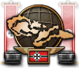
- The option Set up Slovakia as a puppet state in the German event The Fate of Czechoslovakia, which releases
 斯洛伐克 as a
斯洛伐克 as a  帝国保护国 for 德国
帝国保护国 for 德国 - The option A puppet government is preferable in the
 匈牙利 event Slovakia transferred, which releases 斯洛伐克 as a
匈牙利 event Slovakia transferred, which releases 斯洛伐克 as a  傀儡国 for 匈牙利
傀儡国 for 匈牙利
- The option Set up Slovakia as a puppet state in the
 Czechoslovakia's事件Unrest in Slovakia，它把斯洛伐克作为整合傀儡国释放给
Czechoslovakia's事件Unrest in Slovakia，它把斯洛伐克作为整合傀儡国释放给 捷克斯洛伐克
捷克斯洛伐克 - 这可以通过Munich Conference event chain触发，最终导向事件第一共和国的覆灭
- In this case only (if not at war) there is an option for the player to switch to 斯洛伐克
- In this case only (if not at war) there is an option for the player to switch to
- 触发此事的另一种方式是焦点「拉拢捷克民族主义政党」

- If
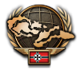
Feeding the Crocodile was completed before this focus then Unrest in Slovakia will not fire
- If
- 这可以通过Munich Conference event chain触发，最终导向事件第一共和国的覆灭
- Czechoslovakia's focus Slovakia Autonomy Agreement, which releases 斯洛伐克 as an 整合傀儡国 with
 民主主义意识形态
民主主义意识形态 - Czechoslovakia's focus Czechoslovak Union, which releases 斯洛伐克 as an 整合傀儡国 with
 共产主义意识形态
共产主义意识形态
.
| 政党 | 意识形态 | 支持率 | 党派领袖 | 国家名称 | 是否执政？ |
|---|---|---|---|---|---|
| 民主主义 | 6% | Ján Ursíny | Slovak Republic | No | |
| Komunistická strana Slovenska (KSS) | 4% | Karol Šmidke | Slovak Socialist Republic | No | |
| Hlinkova Slovenská Ludová Strana (HSLS) | 90% | Jozef Tiso | 斯洛伐克 | 是 | |
| 中立主义 | 0% | Jozef Tiso | Free State of Slovakia | No |
| 政党 | 意识形态 | 支持率 | 党派领袖 | 国家名称 | 是否执政？ |
|---|---|---|---|---|---|
| 民主主义 | 13.33% | Ján Ursíny | Slovak Republic | No | |
| Komunistická strana Slovenska (KSS) | 13.33% | Karol Šmidke | Slovak Socialist Republic | No | |
| Hlinkova Slovenská Ludová Strana (HSLS) | 60% | Jozef Tiso | 斯洛伐克 | 是 | |
| 中立主义 | 13.33% | Jozef Tiso | Free State of Slovakia | No |
国家领袖
| 意识形态 | 肖像 | 名称 | 党派 | 特质 | 效果 | 可用 |
|---|---|---|---|---|---|---|
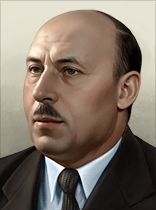 |
Ján Ursíny | 民主主义 | Agrarian Old Guard |
|
起始民主制领袖 | |
| Karol Šmidke | Komunistická strana Slovenska (KSS) | 资深共产党人 |
|
起始共产主义领袖 | ||
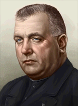 |
Jozef Tiso | Hlinkova Slovenská Ľudová Strana (HSLS) | Vodca |
|
起始领袖 | |
| Vojtech Tuka | Hlinkova Slovenská Ľudová Strana (HSLS) | Head of the Radical Wing | Has taken the Revenge of the Radical Wing决议 | |||
| Jozef Tiso | 中立主义 | Nationalist Catholic Priest | 起始中立制领袖 |
决议
- 斯洛伐克 can form
 奥匈帝国
奥匈帝国 - Revenge of the Radical Wing: Can be selected if the popularity of
 法西斯主义 is above 90% and Vojtech Tuka has been hired as an advisor
法西斯主义 is above 90% and Vojtech Tuka has been hired as an advisor
国策
- 主条目：Austro-Hungarian joint national focus tree branches
 斯洛伐克 can get a new branch in addition to its 通用国策树, should
斯洛伐克 can get a new branch in addition to its 通用国策树, should  奥地利 complete the focuses
奥地利 complete the focuses  多瑙河联邦 or
多瑙河联邦 or  Demand Hungarian Submission or if
Demand Hungarian Submission or if  匈牙利 completes the focuses
匈牙利 completes the focuses  The Lands of the Crown of Saint Stephen or
The Lands of the Crown of Saint Stephen or  多瑙河联邦 as vassal.
多瑙河联邦 as vassal.
国家精神
 斯洛伐克 开局拥有以下国家精神：
斯洛伐克 开局拥有以下国家精神：
With  我们时代的和平 enabled,
我们时代的和平 enabled,  斯洛伐克 starts with additional national spirits:
斯洛伐克 starts with additional national spirits:
斯洛文尼亚
斯洛文尼亚共和国 开局时为民主主义，每 4 年举行一次选举。下一次选举在 1940 年 1 月。
开局时为民主主义，每 4 年举行一次选举。下一次选举在 1940 年 1 月。
| 政党 | 意识形态 | 支持率 | 党派领袖 | 国家名称 | 是否执政？ |
|---|---|---|---|---|---|
| 民主主义 | 33% | 通用 | 斯洛文尼亚共和国 | 是 | |
| 共产主义 | 34% | 通用 | Democratic People's Republic of Slovenia | No | |
| 法西斯主义 | 0% | 通用 | Falangist Slovenia | No | |
| 中立主义 | 33% | 通用 | 斯洛文尼亚 | No |
 Italian
Italian  法西斯主义 subject name: Province of Ljubljana
法西斯主义 subject name: Province of Ljubljana
 Yugoslavian subject name: 德拉瓦省
Yugoslavian subject name: 德拉瓦省
决议
 斯洛文尼亚 can form
斯洛文尼亚 can form  奥匈帝国
奥匈帝国
国策
- 主条目：Austro-Hungarian joint national focus tree branches
 斯洛文尼亚 can get a new branch in addition to its 通用国策树, should
斯洛文尼亚 can get a new branch in addition to its 通用国策树, should  奥地利 complete the focuses
奥地利 complete the focuses  多瑙河联邦 or
多瑙河联邦 or  Demand Hungarian Submission or if
Demand Hungarian Submission or if  匈牙利 completes the focuses
匈牙利 completes the focuses  The Lands of the Crown of Saint Stephen or
The Lands of the Crown of Saint Stephen or  多瑙河联邦 as vassal.
多瑙河联邦 as vassal.
Thuringia
图林根自由州 开局时为民主主义，每 4 年举行一次选举。下一次选举在 1940 年 1 月。
开局时为民主主义，每 4 年举行一次选举。下一次选举在 1940 年 1 月。
| 政党 | 意识形态 | 支持率 | 党派领袖 | 国家名称 | 是否执政？ |
|---|---|---|---|---|---|
| 民主主义 | 60% | Erwin Baum | 图林根自由州 | 是 | |
| 共产主义 | 20% | 通用 | People's State of Thuringia | No | |
| 法西斯主义 | 10% | 通用 | Great Thuringii | No | |
| 中立主义 | 10% | 通用 | Duchy of Thuringia | No |
| 意识形态 | 肖像 | 名称 | 党派 | 特质 | 效果 | 可用 |
|---|---|---|---|---|---|---|
保守主义 |
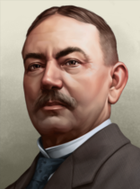 |
Erwin Baum | 民主主义 | – | – | 起始领袖 |
决议
 Thuringia can form
Thuringia can form  德国
德国
特兰西瓦尼亚
 特兰西瓦尼亚 以民主主义
特兰西瓦尼亚 以民主主义 开局，每 4 年举行一次选举。下一次选举在 1940 年 1 月。
开局，每 4 年举行一次选举。下一次选举在 1940 年 1 月。
| 政党 | 意识形态 | 支持率 | 党派领袖 | 国家名称 | 是否执政？ |
|---|---|---|---|---|---|
| 民主主义 | 33% | 通用 | 特兰西瓦尼亚 | 是 | |
| 共产主义 | 34% | 通用 | Carpathian Socialist Union | No | |
| Partidul Lui Dracula (PD) | 0% | 通用 | Legionary Transylvania | No | |
| 中立主义 | 33% | Iuliu Maniu | Principality of Transylvania | No |
 Italian
Italian  法西斯主义 subject name: Dacian Protectorate
法西斯主义 subject name: Dacian Protectorate
 Yugoslavian subject name: 特兰西瓦尼亚自治区
Yugoslavian subject name: 特兰西瓦尼亚自治区
| 意识形态 | 肖像 | 名称 | 党派 | 特质 | 效果 | 可用 |
|---|---|---|---|---|---|---|
中间主义 |
|
Iuliu Maniu | 中立主义 | – | – | 起始领袖 |
决议
 特兰西瓦尼亚 can form
特兰西瓦尼亚 can form  奥匈帝国
奥匈帝国
国策
- 主条目：Austro-Hungarian joint national focus tree branches
 特兰西瓦尼亚 can get a new branch in addition to its 通用国策树, should
特兰西瓦尼亚 can get a new branch in addition to its 通用国策树, should  奥地利 complete the focuses
奥地利 complete the focuses  多瑙河联邦 or
多瑙河联邦 or  Demand Hungarian Submission or if
Demand Hungarian Submission or if  匈牙利 completes the focuses
匈牙利 completes the focuses  The Lands of the Crown of Saint Stephen or
The Lands of the Crown of Saint Stephen or  多瑙河联邦 as vassal.
多瑙河联邦 as vassal.
Tuscany
The  托斯卡纳大公国 starts as
托斯卡纳大公国 starts as  中立主义 with elections every 5 years. Next election is in March 1939.
中立主义 with elections every 5 years. Next election is in March 1939.
| 政党 | 意识形态 | 支持率 | 党派领袖 | 国家名称 | 是否执政？ |
|---|---|---|---|---|---|
| Tuscan Democratic Union | 30% | 通用 | Confederated States of Tuscany | No | |
| Tuscan Bolshevik Party | 5% | 通用 | People's Republic of Tuscany | No | |
| Etrurian Coalition | 5% | 通用 | Etrurian Social Republic | No | |
| Ducal Supporters | 60% | Joseph Ferdinand von Habsburg-Lorraine | 托斯卡纳大公国 | 是 |
As a  中立主义 subject, it is known as the
中立主义 subject, it is known as the  Duchy of Tuscany.
Duchy of Tuscany.
As a  受监管国, it is known as the [宗主国的] Occupation Zone of Tuscany.
受监管国, it is known as the [宗主国的] Occupation Zone of Tuscany.
| 意识形态 | Portrait* | 名称 | 党派 | 特质 | 效果 | 可用 |
|---|---|---|---|---|---|---|
Despotism |
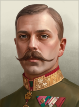 |
Joseph Ferdinand von Habsburg-Lorraine | Ducal Supporters | 士兵国王 |
|
起始领袖 |
* Unique portrait requires  诸神黄昏.
诸神黄昏.
两西西里
The  两西西里王国 starts as
两西西里王国 starts as  中立主义 with elections every 5 years. Next election is in March 1939.
中立主义 with elections every 5 years. Next election is in March 1939.
| 政党 | 意识形态 | 支持率 | 党派领袖 | 国家名称 | 是否执政？ |
|---|---|---|---|---|---|
| Neapolitanian Republican Party | 20% | 通用 | Neapolitanian-Sicilian Republic | No | |
| Mezzogiornian Union Party | 20% | 通用 | People's Republic of Mezzogiorno | No | |
| Partito Partenopea Fascista | 10% | 通用 | Parthenopean Republic | No | |
| Kings Party | 50% | Ferdinand Pius of Bourbon-Two Sicilies | 两西西里王国 | 是 |
As a subject, it is known as the 两西西里.
As a  受监管国, it is known as the [宗主国的] Occupation Zone of Naples and Sicily.
受监管国, it is known as the [宗主国的] Occupation Zone of Naples and Sicily.
| 意识形态 | Portrait* | 名称 | 党派 | 特质 | 效果 | 可用 |
|---|---|---|---|---|---|---|
Despotism |
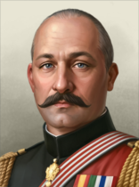 |
Ferdinand Pius of Bourbon-Two Sicilies | Kings Party | Duke of Calabria and Castro |
|
起始领袖 |
* Unique portrait requires  诸神黄昏.
诸神黄昏.
威尔士
 威尔士 以民主主义
威尔士 以民主主义 开局，每 4 年举行一次选举。下一次选举在 1940 年 1 月。
开局，每 4 年举行一次选举。下一次选举在 1940 年 1 月。
| 政党 | 意识形态 | 支持率 | 党派领袖 | 国家名称 | 是否执政？ |
|---|---|---|---|---|---|
| 民主主义 | 93% | 通用 | 威尔士 | 是 | |
| 共产主义 | 4% | 通用 | Welsh People's Republic | No | |
| 法西斯主义 | 3% | 通用 | Cambria | No | |
| 中立主义 | 0% | 通用 | Principality of Wales | No |
决议
- 主条目：Welsh decisions
With the  效忠审判 DLC enabled,
效忠审判 DLC enabled,  威尔士 can get cores on
威尔士 can get cores on  威尔士亲王国 via a decision.
威尔士亲王国 via a decision.
策略与指南
Retaking southern Argentina by British assistance
 威尔士 can core
威尔士 can core  威尔士阿根廷 if Wales controls Welsh Argentina's cores. Should Wales feel ready and prepared to go to war with Argentina, it would be risky as Argentina has a decent army and navy. Great Britain is another way to go start off the conquest too. But, in this particular situation, it cant release Wales manually. However, with the "London Naval Treaty Signatory" spirit it can bully and harass Argentina in order to get a war declaration through naval treaty decision. Depending on the situation, Argentina is prone to the British pressure and accept navy disarmament. But if it refuses, then you can declare war on Argentina and naval invade from Falkland Islands. Utilize the navy, and bring the air force and a number of troops to commit to the invasion. Argentina will put up little resistance, but will nonetheless capitulate. In the process, release Welsh Argentina and decide the fate of the rest of the Argentinian lands. Alternatively, Argentina gets an invitation to join the LNT. If refused, this gives a war goal to all signatories. And, stick with the naval invasion program mentioned earlier.
Otherwise, should the Argentinian navy disarmament occur instead, then there is another alternative. Go for the "A Change in Course" Focus, turn fascist and manually justify on Argentina. And, follow up with the fascist decision and focuses in the country in order to make manual releases easy. In the meantime, build up military, civilian factories and dockyards in the Welsh Argentinian cores while waiting on the fascist decisions to finish.
威尔士阿根廷 if Wales controls Welsh Argentina's cores. Should Wales feel ready and prepared to go to war with Argentina, it would be risky as Argentina has a decent army and navy. Great Britain is another way to go start off the conquest too. But, in this particular situation, it cant release Wales manually. However, with the "London Naval Treaty Signatory" spirit it can bully and harass Argentina in order to get a war declaration through naval treaty decision. Depending on the situation, Argentina is prone to the British pressure and accept navy disarmament. But if it refuses, then you can declare war on Argentina and naval invade from Falkland Islands. Utilize the navy, and bring the air force and a number of troops to commit to the invasion. Argentina will put up little resistance, but will nonetheless capitulate. In the process, release Welsh Argentina and decide the fate of the rest of the Argentinian lands. Alternatively, Argentina gets an invitation to join the LNT. If refused, this gives a war goal to all signatories. And, stick with the naval invasion program mentioned earlier.
Otherwise, should the Argentinian navy disarmament occur instead, then there is another alternative. Go for the "A Change in Course" Focus, turn fascist and manually justify on Argentina. And, follow up with the fascist decision and focuses in the country in order to make manual releases easy. In the meantime, build up military, civilian factories and dockyards in the Welsh Argentinian cores while waiting on the fascist decisions to finish.
After that release Argentinian Wales and then "Play as" release Wales. As released nation, Wales will possess a few technologies that you as Great Britain has researched in the rest of the in game time. Again, build cheap submarines, only a few suffice to make amends onto naval invasion, after going with the Naval Effort focus. Then, with decent political power hire a chief of army for an early army experience boost. After that, go for the political effort. Go communist, and ignite a civil war. Make a template of one cavalry unit, and spam it out, and capture its capital. At the same time, justify on Republican Spain, if they are currently losing in the Spanish Civil War. Manpower can be an issue so take the "Ideological Loyalty" as the Welsh manpower will go absent way quick. You should also have a fair amount of political power at this point, so take some stability-increasing decisions and maybe a Captain of Industry. And at the same time, justify on Wales. Once your war justification on Republican Spain is completed, declare war on them, and ask military access on Nationalist Spain. Nationalist Spain will be your stepping stone for the naval invasion of Welsh Argentina. With the justification finished, declare war on Welsh Argentina and initiate the invasion. Welsh Argentina wont have any troops deployed at this point thus it would make it easy for the invading troops to land in. Like in the previous strategy and depending on the player's decision, it can either puppet or annex Welsh Argentina after its capitulation. But fortunately enough, if Wales controls the Welsh Argentinian cores, it can finally take the decision and core them.
威斯特法伦
威斯特伐利亚王国 开局时为中立主义，每 4 年举行一次选举。下一次选举在 1940 年 1 月。
开局时为中立主义，每 4 年举行一次选举。下一次选举在 1940 年 1 月。
| 政党 | 意识形态 | 支持率 | 党派领袖 | 国家名称 | 是否执政？ |
|---|---|---|---|---|---|
| 民主主义 | 5% | 通用 | Free State of Hanover | No | |
| 共产主义 | 25% | 通用 | People's Republic of Lower Saxony | No | |
| 法西斯主义 | 20% | 通用 | Greater Hanover | No | |
| 中立主义 | 50% | Ernest Augustus, Duke of Brunswick | 威斯特伐利亚王国 | 是 |
| 意识形态 | 肖像 | 名称 | 党派 | 特质 | 效果 | 可用 |
|---|---|---|---|---|---|---|
Despotism |
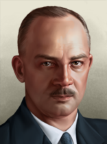 |
Ernest Augustus, Duke of Brunswick | 中立主义 | – | – | 起始领袖 |
决议
 威斯特法伦 can form
威斯特法伦 can form  德国
德国
| 西欧 |
|
| 东欧 |
| 西欧 |
|
| 东欧 |
| 苏联 |
|
模板：Country navbox/Americas
模板：Country navbox/Asia
模板：Country navbox/Africa
模板：Country navbox/Special